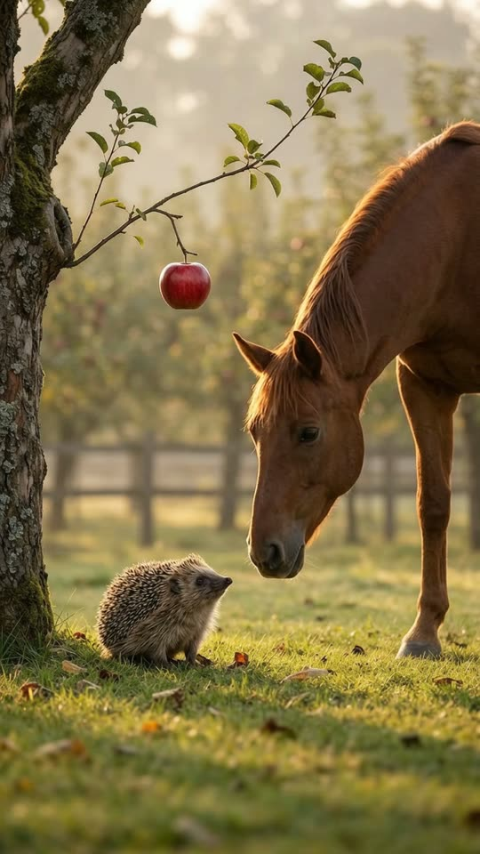
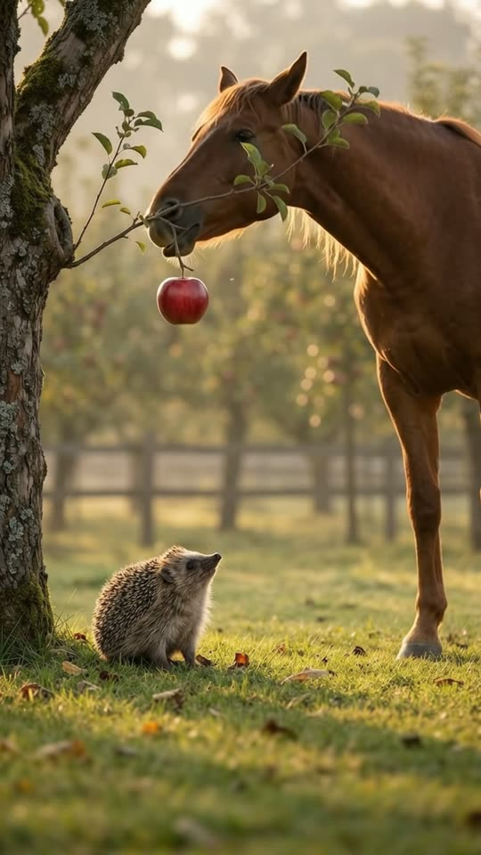
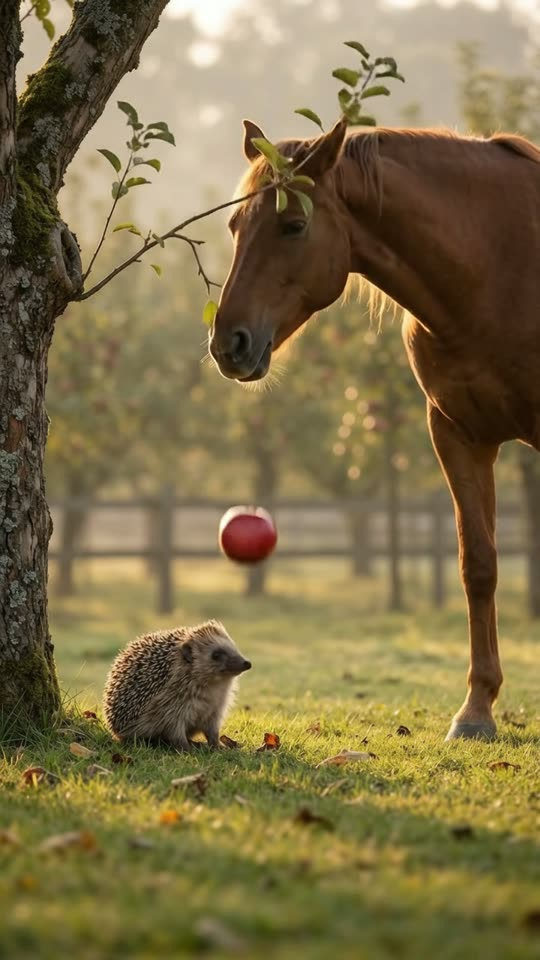
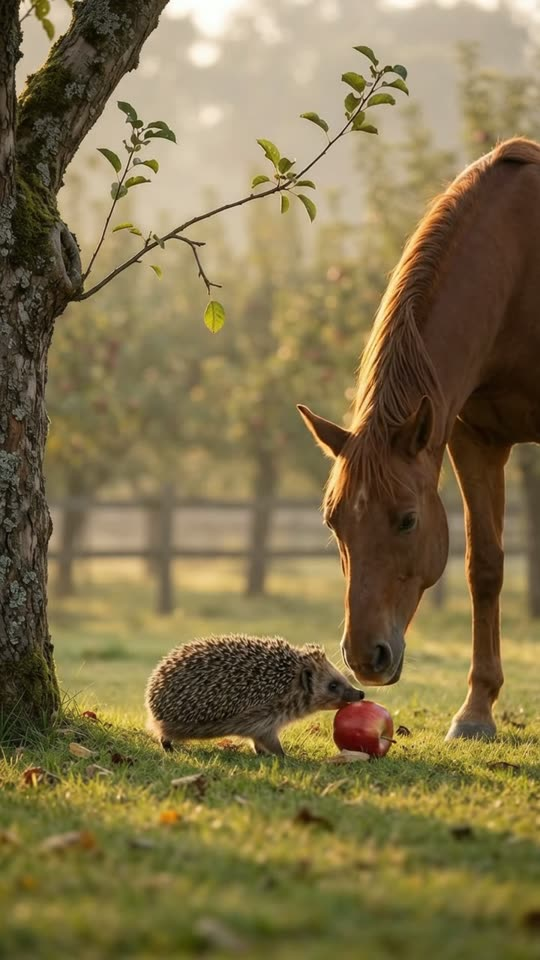

Free prompt pack
The apple was too high.She gave it one soft tug.
A tiny hedgehog sits under an apple tree, looking up at an apple he'll never reach. The horse next to him stretches her neck, takes the branch in her lips and gives it one soft tug. The apple drops right in front of his nose, and he starts nudging it home. One still image and one prompt, in one take.
Both prompts, in the order I ran them. Be the horse: pull each branch down and let go to drop the apple and reveal the prompt. Tap the meadow to shake an apple loose.
The first frame
Everything has an address. This image is frame one: an old apple tree at the left edge, one red apple hanging from a low branch, a hedgehog in the grass below it and a chestnut horse on the right with her head lowered to him.
Watch out
Every element gets its x and y in the frame, and the video prompt repeats the same numbers. The take starts exactly where the image ends.

The prompt 323 words
Vertical 9:16 photorealistic wildlife photograph, nature documentary still, shot on a 200mm telephoto lens from a tripod about 8 metres away, golden hour in a quiet countryside apple orchard. Composition: an old apple tree trunk stands at the far left edge of the frame (x 0-12%, y 15-75%), its bark rough and mossy. One thin low branch grows from the trunk and reaches right across the upper part of the frame (x 10-75%, y 18-26%), with a few green leaves. A single shiny red apple hangs from this branch on a short stem at x 50%, y 30%, perfectly still. Directly below the apple, in short green grass with a few dry fallen leaves, sits a small European hedgehog at x 48%, y 80%, body at three-quarters toward the camera, nose tilted up toward the apple, tiny dark eyes catching the light, brown-and-cream spines, small front paws visible. The hedgehog takes up about 9% of the frame width. On the right side stands a calm chestnut horse with a darker mane, its body partly cropped by the right edge of the frame (x 58-100%, y 35-95%). Its front hooves rest on the grass at x 72%, y 90%. Its neck curves down and to the left, and its head sits at x 63%, y 52%, looking down at the hedgehog with soft, curious eyes and ears pointing forward. The horse's head is about four times the size of the hedgehog's body. Lighting: low warm sun from behind-left, golden rim light on the horse's mane and on the hedgehog's spines, a warm highlight on the apple, long soft shadows falling toward the lower right. Background: rows of apple trees and a wooden fence melted into soft warm bokeh, light haze. Shallow depth of field: the hedgehog, the apple and the horse's head are sharp. Natural colours, realistic fur and spine texture, wet reflections in the eyes. Clean image, no text, no watermark, no logo.
Reach, tug, drop, nudge
Ten seconds, locked off from the meadow. Add the image as the reference, set 10 s, 9:16, 720p and audio on, and paste the prompt whole.
- 2.5–4.5 sthe neck rises
- 4.5–5.5 sone soft tug
- 5.5–6.1 sthe drop
- 6.6–10 sthe nudge
Watch out
Count the apple and say where it lands. 'The same and only apple' in the locks, and 'lands at x 50%, y 77%, right in front of the hedgehog's nose' in the timing: it fell right there, with one soft bounce.
Fragments



The prompt 1453 words
FORMAT Vertical 9:16 wildlife video, image-to-video from the provided first frame. ONE SINGLE UNBROKEN TAKE in real time, filmed from a tripod at the edge of an orchard meadow. 1x speed, 24 fps, exactly 10.0 seconds. The first frame of the video is the provided image, identical in framing, animals, positions, light and colours. Every frame of the video belongs to the same continuous moment, with time flowing forward at normal speed from the first frame to the last. SCENE CONTEXT Late golden afternoon in a quiet countryside apple orchard. A small hedgehog sits in the grass under an apple tree, looking up at a red apple hanging just out of its reach. A calm chestnut horse standing beside it notices the hedgehog, stretches its neck up, takes the thin branch gently between its lips and gives it one soft tug. The apple drops into the grass right in front of the hedgehog. The hedgehog flinches, then sniffs the apple, presses its nose against it and starts rolling it away across the grass, while the horse lowers its head and watches it go with a slow blink. A small, quiet act of kindness between two animals of very different sizes. LOCATION MAP Flat meadow of short green grass with scattered dry leaves. One old apple tree: its rough, mossy trunk at the far left edge (x 0-12%, y 15-75%), one thin low branch reaching right across the top of the frame (x 10-75%, y 18-26%) with a few green leaves. The single red apple hangs from that branch on a short stem at x 50%, y 30%. Background: soft rows of apple trees and a wooden fence, out of focus, warm haze. The ground is one level plane from the bottom of the frame to the background trees. FIRST FRAME AND SPATIAL BLOCKING Frame 1 matches the provided image exactly. The hedgehog sits at x 48%, y 80%, body at three-quarters toward the camera, nose tilted up toward the apple. The apple hangs still at x 50%, y 30%. The horse stands on the right, its body partly cropped by the right edge (x 58-100%, y 35-95%), front hooves on the grass at x 72%, y 90%, neck curving down to the left, head at x 63%, y 52%, looking down at the hedgehog, ears forward. The space between the hedgehog and the horse's front hooves is open grass. OPTICS Long telephoto lens, 200mm equivalent, from about 8 metres away. Shallow depth of field: the hedgehog, the apple and the horse's head share the focal plane and stay sharp the whole time; the background trees stay in soft, warm bokeh. Natural telephoto compression. Focus stays fixed on this plane from the first frame to the last. CAMERA Locked-off tripod shot. The framing stays exactly the same from 0.0 s to 10.0 s: the camera holds perfectly still, at the same height, angle and focal length, for the whole clip. Only the animals, the branch, the leaves, the grass and the apple move. The horizon and the tree trunk stay at the same place in the frame from start to finish. ACTION TIMING 0.0-1.5 s: the hedgehog sits still, nose twitching upward toward the apple, two small quick sniffs. The horse keeps its head low at x 63%, y 52%, watching the hedgehog, nostrils breathing softly. 1.5-2.5 s: the horse turns its ears fully forward, tilts its head slightly to the left, and shifts its weight onto its front legs, its hooves staying in place on the grass. 2.5-4.5 s: the horse slowly raises its neck in one smooth arc. Its head travels from x 63%, y 52% up to x 57%, y 26%, until its lips reach the thin end of the branch at x 56%, y 24%. 4.5-5.5 s: the horse gently takes the branch between its lips and gives one soft downward tug. The branch bends down about the width of the apple, the leaves trembling. 5.5-6.1 s: the apple detaches from its stem, falls straight down in a clean vertical line, lands in the grass at x 50%, y 77%, right in front of the hedgehog's nose, bounces once softly and settles. At the same moment the horse releases the branch, which springs back up. 6.1-6.6 s: the hedgehog flinches slightly, its spines lifting for a brief moment and its head ducking, then it relaxes and the spines settle back down. 6.6-8.5 s: the hedgehog takes two small steps forward, sniffs the apple twice, presses its nose against it and starts rolling it slowly to the left across the grass, the apple wobbling as it turns. 8.5-10.0 s: the hedgehog keeps rolling the apple, reaching about x 38%, y 80% at 10.0 s. The horse lowers its head back down to x 60%, y 55%, close to the grass, watching the hedgehog, one slow blink at 9.2 s, ears relaxed, a soft breath through its nostrils. PHYSICS The branch bends under the horse's lips with natural springiness and, after release, swings back up with two damped oscillations, a few leaves fluttering and then settling. The apple has real weight: it accelerates as it falls, lands with a short soft bounce, and the grass flattens slightly where it lands. As the hedgehog nudges it, the apple rolls unevenly over the grass, wobbling, slowing and stopping briefly between nudges. The horse's mane sways slightly as its neck rises and falls. A light breeze moves the grass blades and the background leaves gently. SCALE & PARALLAX The horse is huge next to the hedgehog: the horse's head alone is about four times the hedgehog's body, and the hedgehog is roughly the size of one of the horse's hooves. The apple is about one third of the hedgehog's body. Everything stands on one ground plane. The background trees and fence stay fixed and soft, keeping the same position and blur for the whole clip. LIGHTING Low warm sun from behind-left, golden hour, constant for the whole clip. Golden rim light on the horse's mane, ears and muzzle, on the hedgehog's spines, and a warm highlight on the apple's skin. Long soft shadows fall toward the lower right; the apple's small shadow travels with it as it falls and rolls. Warm haze in the background. Exposure and colour stay steady from start to finish. CHARACTER ACTING The horse is calm, gentle and patient the whole time: slow, deliberate movements, soft eyes, ears forward with curiosity, relaxed breathing visible at the nostrils, lips moving softly and carefully on the branch. It behaves like a real horse. The hedgehog behaves like a real hedgehog: short sniffs, quick nose twitches, small careful steps on tiny legs, a moment of caution when the apple lands, then determined little nudges with its nose. Neither animal looks at the camera. AUDIO Natural ambience only: a light breeze in the leaves, distant birdsong, a soft insect hum, constant throughout. One gentle exhale through the horse's nostrils at 1.5 s. A crisp rustle of leaves and branch at 4.5-5.5 s. A soft dull thud as the apple lands in the grass at 6.0 s. Tiny sniffing sounds from the hedgehog at 6.6-7.2 s and a faint grass rustle as the apple rolls. A soft horse breath at 9.5 s. Nobody speaks. Ambient sound only, without music. LOOK Photorealistic nature documentary footage, like a clip from a BBC wildlife series, filmed on a professional cinema camera with a long lens. Natural fur, mane and spine detail, real eyes with wet reflections, real grass texture. Warm, natural colours, gentle contrast, true-to-life tones. Clean full-frame image without on-screen text, subtitles, watermarks, logos or borders. POSITIVE LOCKS Exactly one horse, one hedgehog, one apple tree, one branch and one apple. The apple that hangs from the branch in the first frame is the same and only apple that falls, lands in front of the hedgehog and is rolled away. From the first frame to the last there is exactly one apple in the scene: first on the branch, then falling, then in the grass in front of the hedgehog. After the apple falls, the branch stays with leaves only. The horse has four legs, one head and one mane, and its front hooves stay planted at x 72%, y 90% for the whole clip. The hedgehog has four small legs and one nose. The same horse, the same hedgehog, the same tree and the same framing from 0.0 s to 10.0 s, with identical colours, markings and proportions in every frame. The animals stay fully realistic and solid at every moment. ONE LOCKED-OFF SHOT. ONE HORSE. ONE HEDGEHOG. ONE APPLE THAT FALLS ONCE AND ROLLS AWAY. SAME FRAMING FROM FIRST FRAME TO LAST. REAL TIME. GOLDEN HOUR.
Rule 01
Small help, big size gap
A horse and a hedgehog, one soft tug. The smaller the favour, the bigger the difference between the two animals should be.
Rule 02
One apple, said every way
The first frame, the timing and the locks all say there is exactly one apple, and it's the one on the branch. Things that fall are the things that multiply.
Rule 03
Give the fall a landing
'Right in front of the hedgehog's nose', plus x 50%, y 77%. Leave the landing out and it drops wherever looks dramatic.
That's the whole build
Now go dropsomething nice.
If yours works, send it over. I read every DM and the good ones end up on the account.
@martiifons